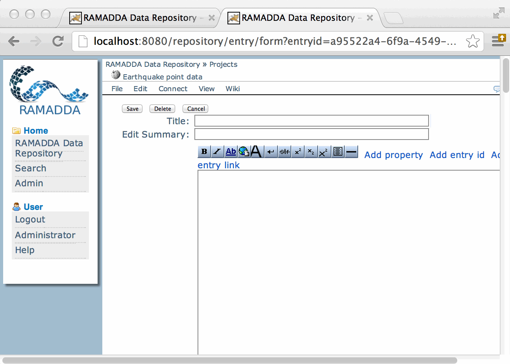

[ht::head {WikiEntry}]
RAMADDA uses wiki text in a number of ways. You can create Wiki Page entries, you can style any entry
using wiki text and you can also add in a Page Style metadata element that allows you
to define the style used for a whole collection of entries.
Wiki Page Entries
One of the entry types that RAMADDA provides is a Wiki Page entry.
You create a new Wiki Page just like you create any entry; in a folder
for which you have write privileges. Go to [ht::menu File {New Entry}].
In the form select "Wiki Page" to go to the Wiki Page create form:

- Create a new wiki entry for the earthquake data
- Enter "Earthquake Point Data" in the title box
- In the wiki text panel, enter
[wiki::text {A link to the earthquake data entry}]
[wiki::text {[[ entryId | Earthquake Data]]}]
[wiki::text {{{ import entryId data.point.map}}}]
The entryId can be obtained by clicking on the "Add entry id" link in the
upper right corner of the text area. Navigate through the tree structure to get to the earthquake
data.
See the help on Wiki Text for more information
on how to use wiki text markup.
The result HTML view of a Wiki Page entry looks like:
The "Details" link in the upper right will show the default HTML view of this page.
The "Wiki History" link in the top tabs will take you to the history page for the entry.
This shows the history of past edits and allows you to view and compare versions and to revert
back to past versions.
[ht::foot]